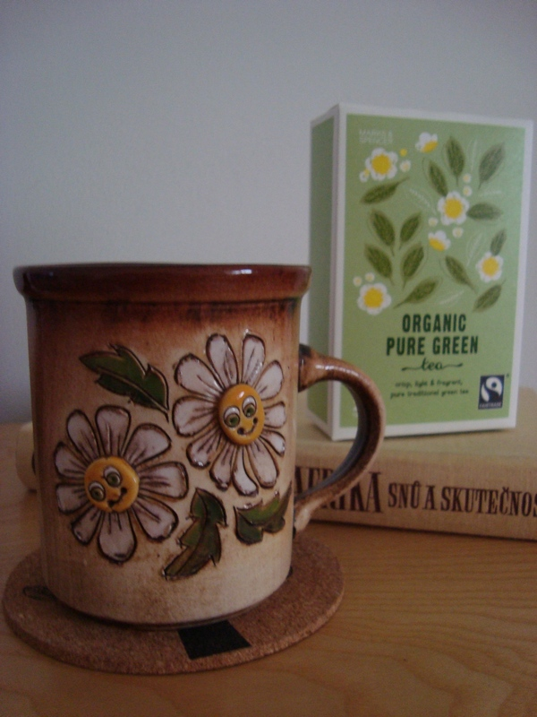
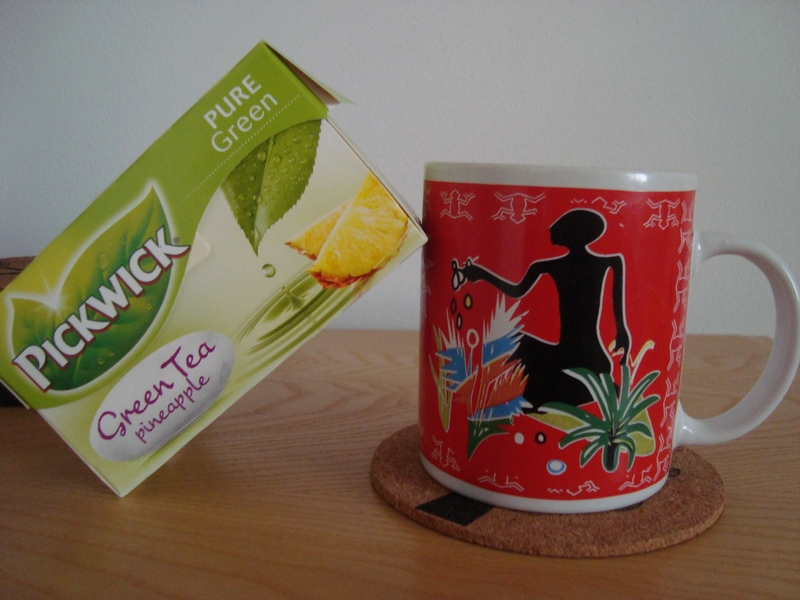
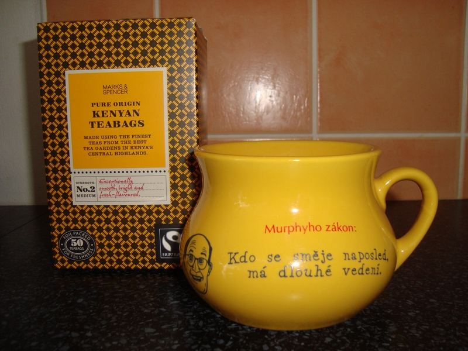
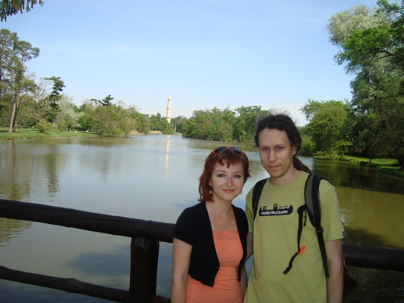

Tak, kostky jsou vrženy… V ISu se objevil onen obávaný rozpis státnic s datem dne D a složením zkušební komise. Můžeme se nad tím rozčilovat, můžeme s tím nesouhlasit, ale to je asi tak všechno, co s tím můžeme dělat :D… Na všem negativním je nicméně třeba vidět i něco pozitivního, a protože mě v budoucích dnech a týdnech nic dobrého nečeká (leda “se učit, se učit, se učit” - jak by řekl Mireček), budu se snažit zpříjemnit si to, jak se dá. Pár nápadů už mám a určitě uvítám v komentářích i vaše rady a tipy, třeba čím jste si učení na státnice zpříjemňovali vy :-)…
Simpsonovi
Dlouhodobé polehávání v učebnicích způsobuje depresivní stavy pramenící z pocitu, že si to stejně nikdy všecko nezapamatujete a jestli přecejen teď v té hlavě něco máte, v den státnic v ní bude pusto a prázdno. Proto sázím na Simpsonovi jako na kvalitní antidepresivum :-).

Oddechové čtivo
Po několikahodinovém brejlení do nezáživných právnických materiálů a učebnic je samozřejmě potřeba, aby si dal mozek trochu voraz a bavil se taky chvilku něčím pokleslejším :D. Klasickou literaturu sice zbožňuju, ale uznejte, že u Shakespeara si mozek nikdy neodpočine tak hezky, jako u nějakého pořádného béčkového braku :D. Z toho důvodu jsem se rozhodla zásobit všelijakými druhy převážně oddechového a relaxačního čtiva, nad kterým budu moct zapomenout na starosti všedního dne a řešit prozměnu jiné “otázky života a smrti”, třeba co se bude na jaře a v létě nosit nebo zda je vrahem zahradník :D. Na fotce není úplně všechno, protože u některých titulů jsem usoudila, že i jako čtení na oddech jsou moc hloupoučké :D…


Čaj o páté
Jsem čajomil, to se ví. Nejsem žádný super odborník, ale nenechám se ani opít rohlíkem :D. Má specializace jsou zelené aromatizované čaje, ale nepohrdnu ani černým či bylinkovým. Bez čaje si nedokážu představit žádné ráno - kolikrát je to taky to jediné, co jsem schopná hned po probuzení dostat do žaludku, když nemám čas na poklidnou snídani. Neznám zkrátka nic lepšího než příjemnou siestu s hrnkem dobrého voňavého čaje. A zásadně nesladím :-)! Mí aktuální čajoví favoriti se nazývají:
- Organic pure green od MaS - čistá příjemná chuť. Vůbec byste nepoznali, že je pytlíkový - chutná jako z čajovny O.-)… Ideální na odpolední siestu!

Povšimněte si sladěného motivu hrníčku a krabičky od čaje…nebyl to záměr :D!
- Pickwick Green Tea Pineapple - byl dárkem od strýca. Když jsem se nad voňavým hrníčkem na velikonoční návštěvě rozplývala, strýc mi věnoval celou krabičku O:). Je to jeden z nejchutnějších pytlíkových čajů, jaké jsem kdy měla.

V psychedelickém hrníčku od Pavči :)
- Piňa Colada - tak tu máme taky jeden sypaný ovocný čajík, nááádherně voňavý! Péťa je na něm ještě závislejší než já :D. K mání ve Vaňkovce.

- Keňský pytlíkový Marks and Spencer - bez něj už si nedokážu představit žádné ráno, je to černý nakopávák :D.

Murphyho moudro z hrnečku :D
Fitocracy
Už to budou skoro 3 měsíce, co jsem se zaregistrovala do této sociální sítě pro všechny sportu-chtivé lidičky. Mě osobně sporty moc nebaví, nemám ráda zimu, nesnáším vodu a mokro obecně a vyrostla jsem na Hané, takže kopce mi dávají taky zabrat - už tím jsou mé sportovní možnosti značně omezené :D. Asi si logicky kladete otázku, proč jsem se tedy vůbec k Fitocracy připojila. Z jednoho prostého důvodu: Přes to všechno si totiž troufám říct, že pohyb zbožňuju a věřím, že to tak má většina lidí, jenom každý z nás potřebuje najít takovou aktivitu, která ho bude bavit. Snažím se pravidelně cvičit už od nějakých 17ti let, kdy jsem se rozhodla vyhlásit boj své dosud lehké skolióze. Mým nejmilejším parťákem na cvičení je už nějaký ten pátek nafukovací gymball, občas taky jeho menší brácha overball a vlastně mám balony ráda obecně - míčové sporty byly asi jediné sporty, které mě kdy v tělocviku bavily :D. Můj problém spočívá v tom, že mě cvičení baví vždycky jen určitou etapu mého života - většinou tehdy, když mě záda nebo krční páteř fakt bolí, mám špatné svědomí ze svého sedavého životního stylu nebo mě po rodinné oslavě zaplaví pocit, že “ty kalhoty se nějak srazily”. Chybí mi parťák, který by mě vyhecoval - dokud jsem bydlela s Pepou, na denním pořádku bylo válení v posteli do oběda (“Jít do školy? Proooč,vždyť jsem tam byla včera :D!”) a noční vyžírání ledničky. Vrcholem našeho pohybu bylo to, když jsme si s mým gymballem házely za prozpěvování “Je den, tak pojď Marie ven”, případně s ním hrály v pokoji fotbal 8-). S Péťou se situace malinko zlepšila, ale nesportovali jsme nikdy nijak pravidelně, prostě jen když se nám chtělo a byl čas.
No a teď alespoň pár slov k Fitocracy aneb proč byste to měli taky vyzkoušet:
- Asi největší výhodu vidím v tom, že na to zkrátka nejste sami. Když se zaregistrujete s bandou přátel, můžete se navzájem hecovat, uspořádat skupinové challenge a soupeřit mezi sebou. A ikdyž třeba nejste soutěživý typ, vědomí toho, že ostatní vaši kamarádi pilně cvičí, vám určitě nedovolí válet se na gauči a kynout :D.
- Každá vaše aktivita se počítá - když půjdete radši 3 patra po schodech, ačkoliv byste mohli použít výtah, když se místo svezení šalinou pěkně projdete pěšky - zkrátka cokoliv. I relativními maličkostmi se dá dělat něco pro zdraví :-).
- Zjistíte, že slova “nedostatek času” jsou jen výmluvy. Pár minut denně může pro své tělo obětovat skutečně každý.
- Sbírání bodů za každou vaši aktivitu stejně jako celé prostředí Fitocracy působí motivačně - teda alespoň na mě. Jsem si jistá, že nebýt Fitocracy, tak se na cvičení kolikrát vykašlu a radši si hodím nožky nahoru :D.
Už to budou skoro 3 měsíce a já se opravdu snažím cvičit každý den. Alespoň trošku. Kvůli práci na diplomce a přípravě na státnice jsem prakticky celé 3 uplynulé měsíce strávila u počítače a to se samozřejmě vůbec nelíbilo mojí krční páteři. Cvičení mi často ulevilo od bolesti a celkově jsem se i díky té troše pohybu denně cítila mnohem líp. Už proto v tom chci pokračovat. Všem, co Fitocracy ještě nevyzkoušeli, vřele doporučuji :-)!

Péťa
…který mě taky občas vytáhne ven a na vzduch a já zjistím, že 3 písmenka před jménem vlastně vůbec nejsou tím nejlepším a nejdůležitějším, co by mě v životě mohlo potkat :-).

Na výletě v Lednici :-)
Na čaje nejsem vůbec, zato o zkouškovým vypiju mnohem víc kafe všeho druhu. Pro mě je to i taková náhražka toho, když mám na něco chuť. Třeba večer už nechci nic jíst, tak si jdu uvařit na chuť kafe.
Musim prostestovat: Honzlová ani Pán Prstenů rozhodně nejsou béčkovej brak a oddychový čtivo zrovna taky ne…
V nějakým svým článku jsem psala, že mám každý zkouškový jednu posedlost, která mě drží. Tohle letní je to seriál HBO True Blood.